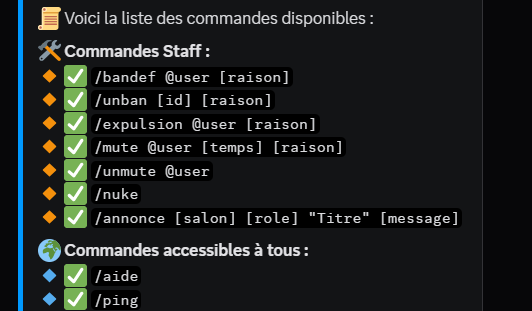
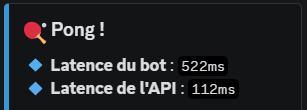

🎯 Contexte & Objectifs
Ce projet est né d'un défi personnel. Voulant apprendre la manipulation du JavaScript, la manipulation d'API et l'utilisation de bibliothèques extere comme axios ou wiston pour les logs. L'objectif principal était d'automatiser ces tâches pour améliorer l'expérience utilisateur, stimuler la participation et faciliter le travail des modérateurs.
Le bot propose une interaction intuitive via des commandes slash, des événements dynamiques et un système de récompenses pour motiver les membres.
🧠 Fonctionnalités principales
- 💬 Commandes slash personnalisées : Utilisation des commandes modernes Discord.js v14 pour une interface utilisateur claire et accessible, permettant d’interagir avec le bot rapidement sans erreurs.
- 📅 Défis mensuels avec rôle à la clé : Chaque mois, de nouveaux défis sont proposés. Les membres qui les complètent reçoivent un rôle spécial, augmentant leur visibilité et motivation.
- 🧩 Énigmes à résoudre : Le bot propose des énigmes personnalisées via des commandes dédiées, encourageant l’esprit d’équipe et la participation ludique.
- 🎁 Système d’événements aléatoires : Des bonus ou malus sont appliqués de manière aléatoire, rendant chaque interaction unique et stimulant l’engagement.
- 🎲 Système de probabilité : Certaines actions du bot reposent sur des probabilités calculées (ex : chance d’obtenir un évènement aléatoire), introduisant un aspect jeu dans le serveur.
- 🛠️ Interface de modération : Des commandes réservées au staff permettent de gérer les membres efficacement (bannissements, avertissements, gestion des rôles).
🏗️ Architecture & Organisation technique
Le bot est construit en Node.js avec Discord.js v14, utilisant une architecture modulaire : chaque fonctionnalité est développée dans un module distinct, facilitant la maintenance et l’évolution.
La configuration et les données dynamiques sont stockées dans des fichiers JSON, simplifiant le déploiement et l’édition sans base de données.
Le système de commandes utilise les slash commands natives de Discord pour une meilleure expérience utilisateur, avec validation des paramètres et gestion d’erreurs centralisée.
⚠️ Difficultés rencontrées & Solutions
- Gestion des permissions complexes : mise en place d’un système fin de contrôle d’accès pour que seules certaines commandes soient accessibles au staff.
- Synchronisation des rôles selon l’avancement des défis : utilisation d’événements Discord.js pour garantir une mise à jour en temps réel.
- Implémentation du système aléatoire de bonus/malus : création d’un algorithme probabiliste fiable et testé.
🚀 Améliorations & évolutions futures
- Ajout d’une base de données (MongoDB ou autre) pour gérer les statistiques et l’historique des membres.
- Développement d’une interface web d’administration pour faciliter la gestion des défis et événements.
- Intégration d’un système de notifications personnalisées pour informer les membres des nouveautés.
- Support multilingue pour toucher une communauté plus large.
⚙️ Technologies utilisées
- Node.js
- Discord.js v14
- JSON pour la configuration et les données
📸 Aperçu

Affichage de la commande /aide montrant toutes les commandes disponibles, classées par catégories, avec description et options.

Réponse rapide de la commande /ping pour vérifier la latence du bot et s’assurer qu’il est en ligne et réactif.
// Exemple simplifié d'une commande slash /ping en Discord.js v14
client.on('interactionCreate', async interaction => {
if (!interaction.isChatInputCommand()) return;
if (interaction.commandName === 'ping') {
const sent = await interaction.reply({ content: 'Pong!', fetchReply: true });
interaction.editReply(\`Pong! Latence : \${sent.createdTimestamp - interaction.createdTimestamp} ms\`);
}
});
📦 Dernière version
Version : V2 Béta 1.1
Date : 18 juillet 2025
- Modification de commandes admin (slash command)